Scenario 01: Crowded Metro
85 dBInput (Noisy)
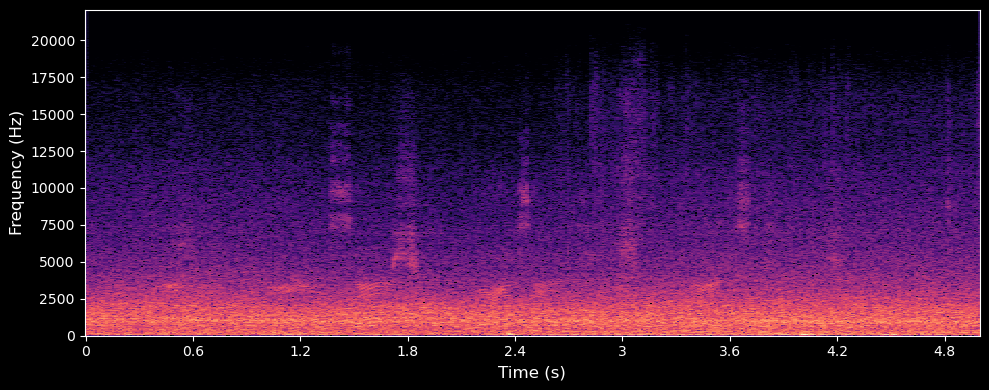
Output (Enhanced)
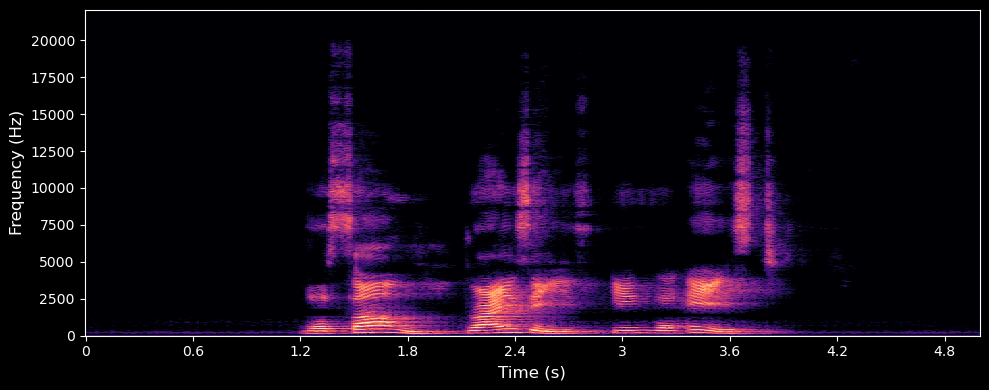
IMU-guided Full-band Speech Enhancement


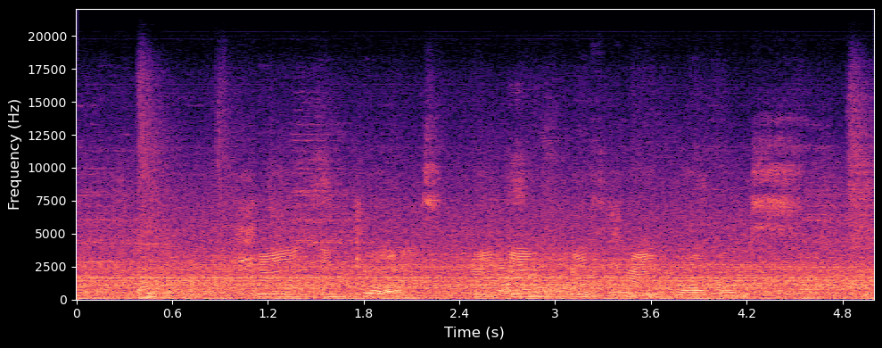
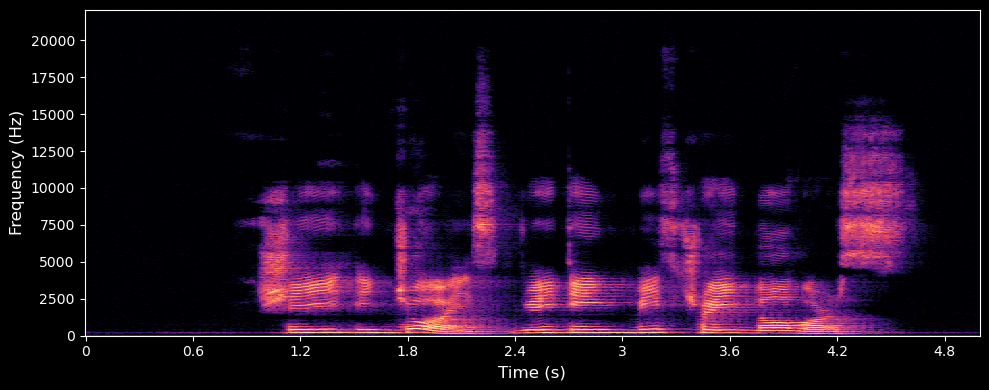
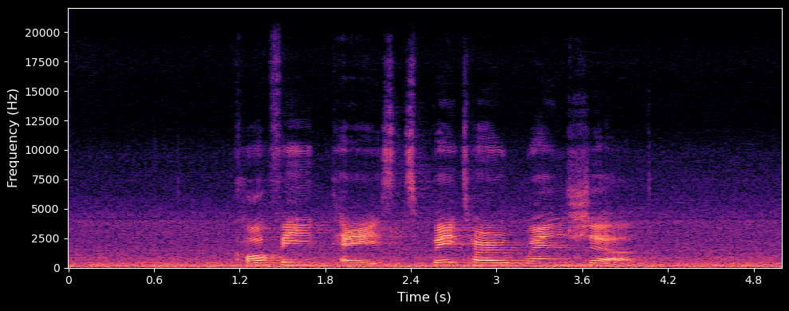
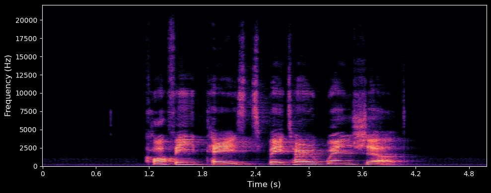
The speaker's voice noise used was derived from the public dataset TIMIT and has a sampling rate of 16kHz.
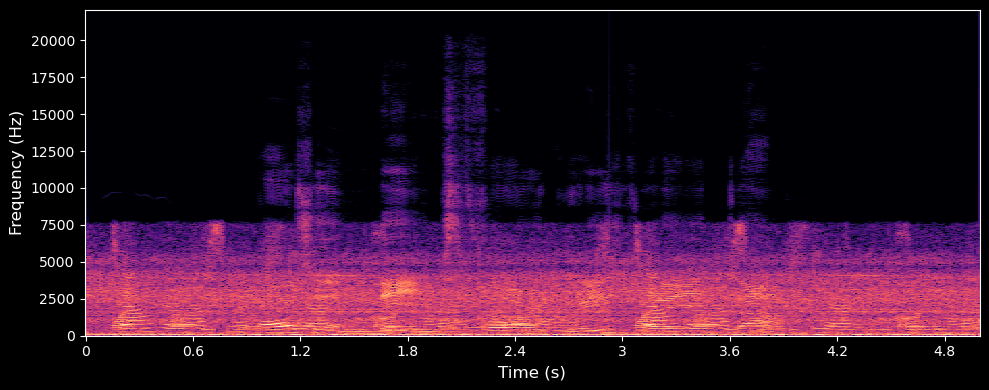
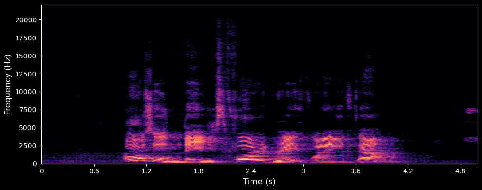
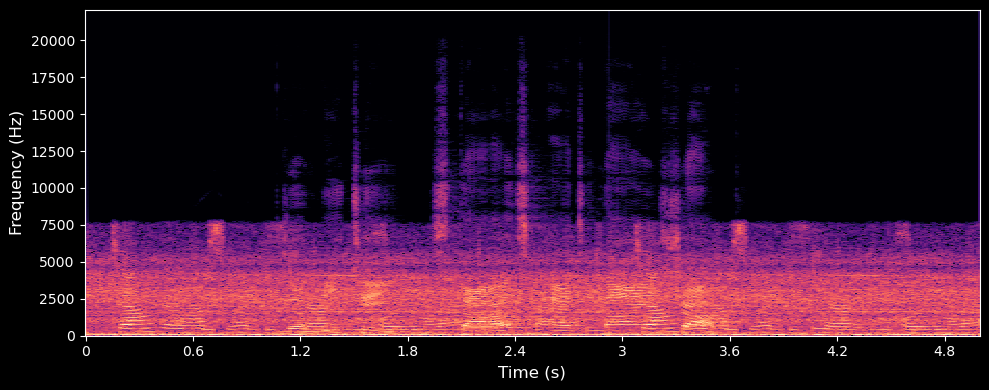
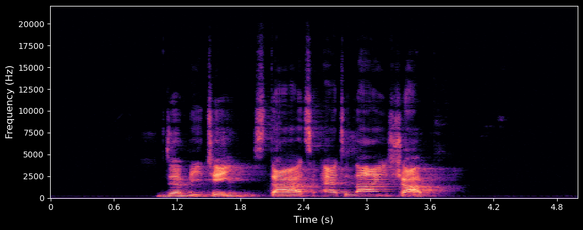
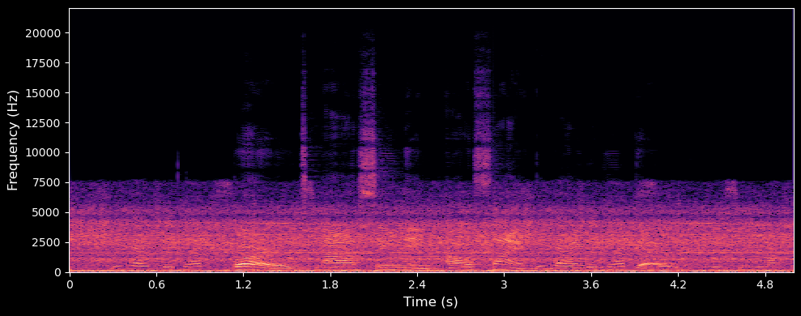
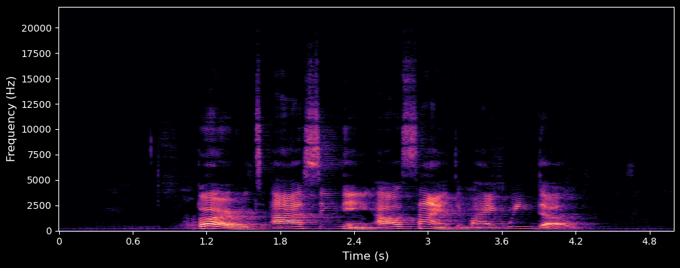
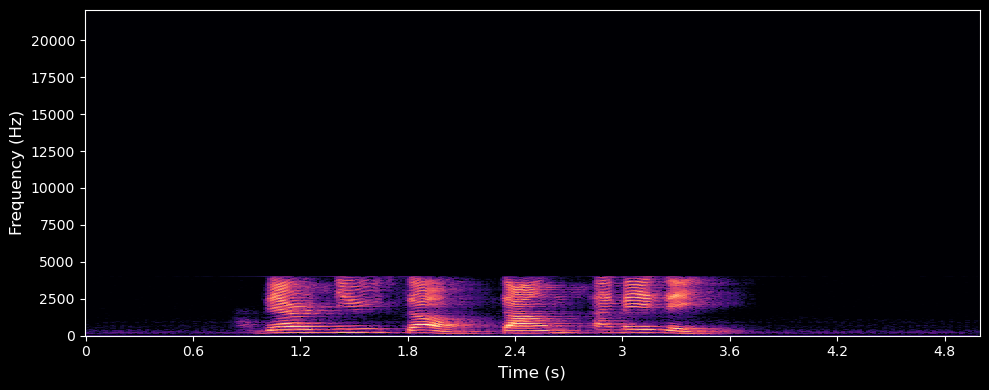
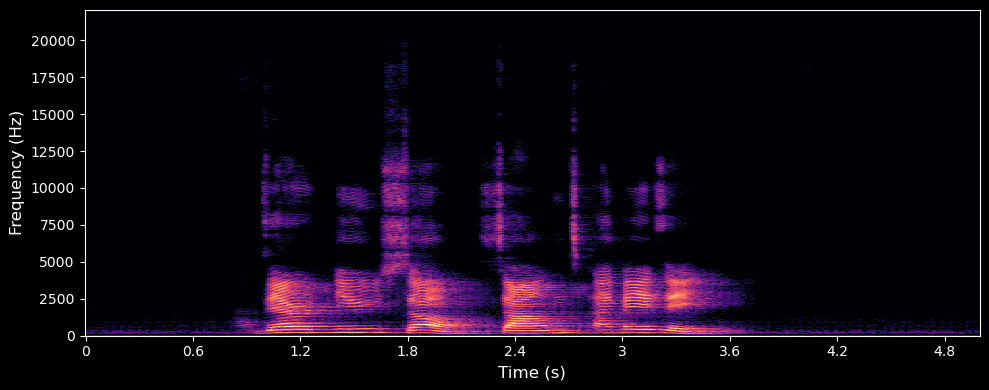